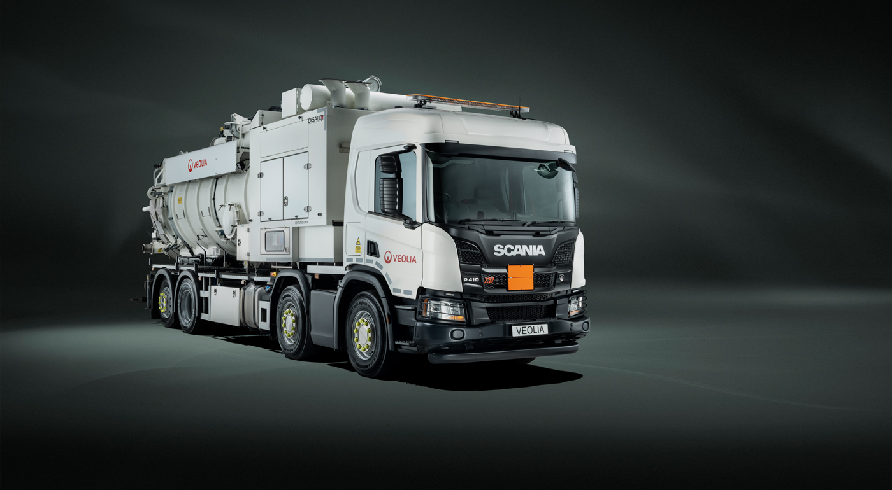
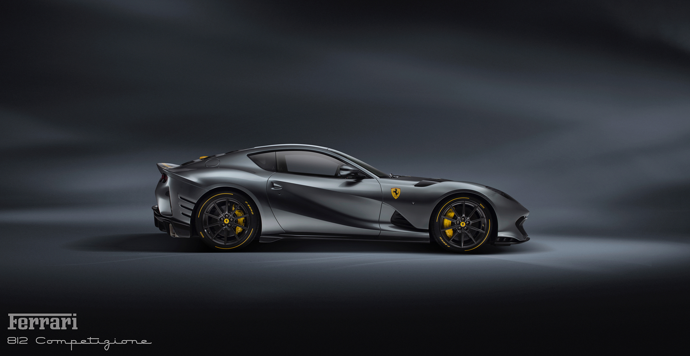
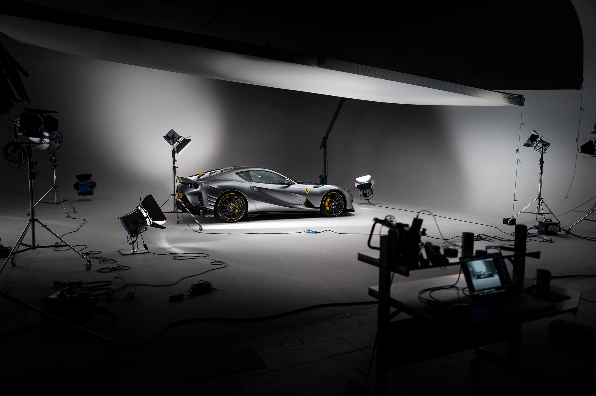

  
Car Info
Name
Image
Link
Centurion
Centurion
Ferrari 812 Competizione
Ferrari 812 Competizione
Centurion
Ferrari 812 Competizione
Ferrari 812 Competizione Studio
Centurion
Ferrari 812 Competizione
Ferrari 812 Competizione Studio
Cryptids of Cornwall:
Beast of Bodmin
A large feline inhabiting Bodmin Moor.
Morgawr
A sea serpent.
Owlman
A giant owl-like creature.